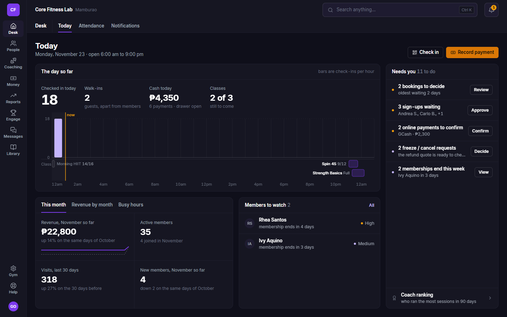

The day so far
Checked in today
0
Cash today
₱0
Classes
2 of 3
still to come
Needs you
11 to do
2 bookings to decide
oldest waiting 2 days
Review
3 sign-ups waiting
Andrea S., Carlo B., +1
Approve
2 online payments to confirm
GCash · ₱2,300
Confirm
RS
Rhea Santos
membership ends in 4 days
High